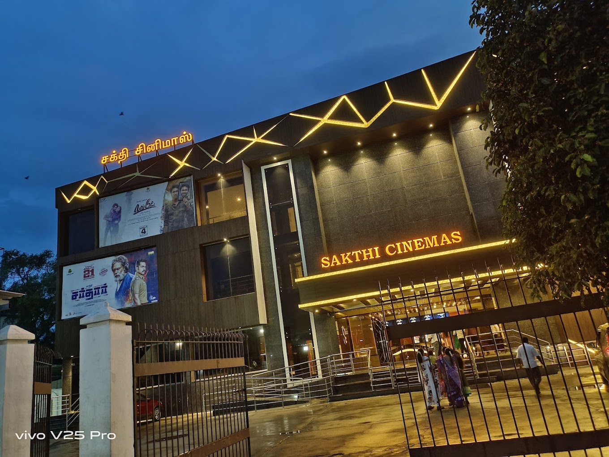

SAKTHI CINEMAS

-
Sakthi Cinemas in Gudiyatham is a popular movie theater located in Gudiyatham, Tamil Nadu, India. It is known for providing entertainment through screenings of the latest movies across various genres. The theater likely offers state-of-the-art facilities, including comfortable seating, high-quality sound systems, and projection technology to enhance the movie-watching experience for its audience.
Sakthi Cinemas may also feature multiple screens, allowing for the simultaneous screening of different films and accommodating a larger number of patrons. Additionally, it might offer amenities such as concessions stands selling snacks and beverages to enhance the movie-going experience.
As with many cinemas, Sakthi Cinemas likely plays a significant role in the local community, serving as a gathering place for residents to enjoy the latest films and socialize with friends and family. It could also host special events, premieres, or screenings of regional and cultural films to cater to diverse audience preferences.
Overall, Sakthi Cinemas in Gudiyatham likely contributes to the cultural and entertainment landscape of the region by providing a platform for people to engage with cinema and enjoy a shared communal experience.
Click image to view SAKTHI CINEMAS in map